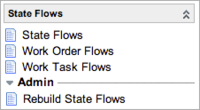

State Flows
| |
Note: This article applies to Fuji. For more current information, see State Flows at http://docs.servicenow.com
The ServiceNow Wiki is no longer being updated. Please refer to http://docs.servicenow.com for the latest product documentation. |
Contents
1 Overview
State flows enable an administrator to customize transitions from one state to another in tables derived from the Task [task] table and configure the system to perform work during transitions to specific states. An example of a state transition is when the State field in an incident changes from Active to Awaiting User Info. An administrator might want to trigger an event during this transition or make a specific field mandatory when the incident reaches the end state.
State transitions in the Work Management application were reimplemented to use state flows. For information about customizing Work Management state flows, see State Flow Customization.
The state flows feature is available starting with the Eureka release.
2 How State Flows Work
When you create a new state flow, the system automatically replaces the usual programming elements that control task states with customizable business rules, client scripts, and UI actions that give you a wide range of processing options. You can configure custom state transitions to occur automatically or manually and in any order. You can create business rules and UI actions that only appear and take effect for certain states.
- Manual transitions: Initiate manual transitions by a UI action that the system creates when you provide a condition or a script.
- Automatic transitions: Initiate automatic transitions from a business rule that the system creates when you provide a condition and a script.
2.1 Available with State Flows
- Custom transitions: Customize the order in which states can change for records in any table that extends the Task [task] table.
- Field controls: Control the behavior and visibility of specific fields when a task changes states or reaches a specified end state.
- State choice list: Limit the values offered in a task record's State field to valid states for that transition. This is the same client script that the system creates to manage field controls for state transitions.
- Events: Trigger events when a state transition occurs or when a record reaches a specific end state.
2.2 Start and End States
You can create a custom state flow for processing that must occur when a task record makes a specific transition from one state to another. These records require a starting state and an ending state, and processing occurs during the transition between states. To perform some processing when a task record reaches a particular end state, you only need to define the end state. In some cases a state flow can have a starting state only, such as when you need to perform some type of cleanup after a task is canceled. A state flow might have no starting or ending state if the processing in the record applies to more than one state transition. The solution is to store the business rule or client script in a state flow record and create a condition to trigger processing for any state change that requires it. An example of this in work management is the Roll Up Changes business rule on the Work Order Task [wm_task] table. This business rule rolls up state changes that occur in tasks to the parent work order.
3 Roles
Users with the admin role can create, edit, and delete state flow records.
4 Menus and Modules
Activating state flows adds the State Flow application to the application navigator, with the following modules (starting with the Eureka release).
|  |
|
{kind=link}
5 Activating State Flows
An administrator can activate the State Flows plugin. This plugin is activated automatically when Work Management is activated.
| Click the plus to expand instructions for activating a plugin. |
|---|
|
If you have the admin role, use the following steps to activate the plugin.
|